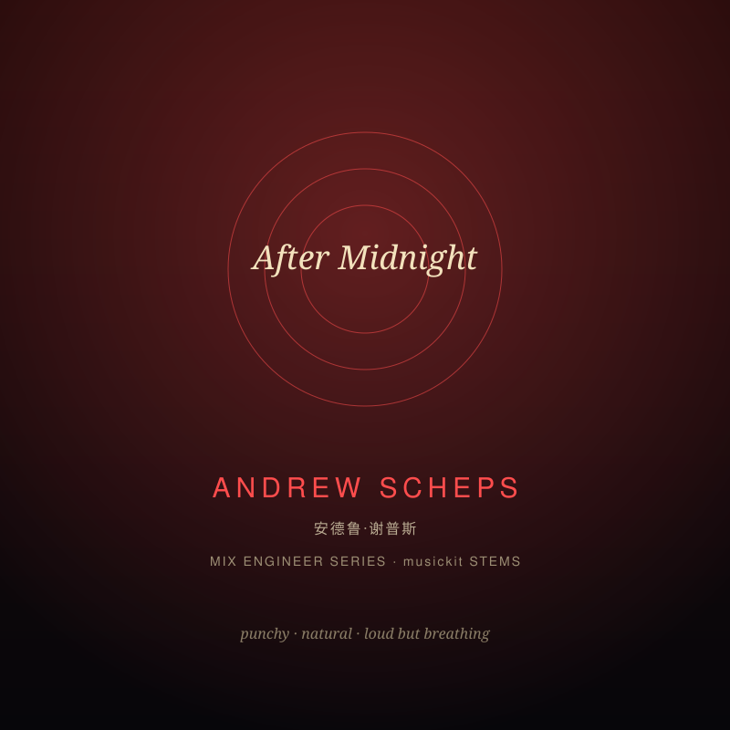

Rock and beyond (Red Hot Chili Peppers, Green Day, Metallica, Adele 21, Biffy Clyro). Signature: punchy natural drums, forward guitars, loud mixes that keep dynamics and never sound squashed.
Reference artists: Red Hot Chili Peppers, Green Day, Metallica, Adele, Biffy Clyro · target ~-11.0 LUFS
| Stage | Signature | Implementation |
|---|---|---|
| Drums | Punchy, natural, present | HPF 30 Hz · lowshelf +2.0 dB @ 95 Hz · peak +1.5 dB @ 2800 Hz · comp -16 dB 3:1 (6/120 ms, k2, +1.5 dB) · sat drive 1.2 mix 0.12 · room reverb 15% · -5 dB |
| Bass | Supportive, defined | HPF 35 Hz · lowshelf +1.5 dB @ 85 Hz · peak +1.0 dB @ 140 Hz · comp -21 dB 3.5:1 (5/160 ms, k2, +0.5 dB) · sat drive 1.3 mix 0.15 · -8 dB |
| Harmony/pad | Open and unhyped | HPF 50 Hz · lowshelf -1.0 dB @ 240 Hz · peak +0.5 dB @ 2500 Hz · comp -24 dB 2.5:1 (14/240 ms, k2, +0.5 dB) · med reverb 12% · M/S +0.25 · -12 dB |
| Lead (the 'voice') | Forward, energetic, clear | HPF 70 Hz · lowshelf +1.0 dB @ 170 Hz · peak +2.0 dB @ 3000 Hz · comp -14 dB 2.5:1 (18/160 ms, k3, +2 dB) · med reverb 12% · M/S +0.08 · -3 dB |
| Background | Natural depth | HPF 90 Hz · LPF 10000 Hz · comp -24 dB 2:1 (18/260 ms, k2, +0 dB) · med reverb 20% · M/S +0.40 · -15 dB |
| Master bus | Loud but breathing, honest punch | HPF 28 Hz · lowshelf +1.0 dB @ 55 Hz · peak +1.0 dB @ 2500 Hz · peak +1.0 dB @ 10000 Hz · comp -15 dB 1.8:1 (8/130 ms, k2, +2 dB) · sat drive 1.1 mix 0.08 · M/S +0.08 · target -11 LUFS · limiter rel 80 ms |